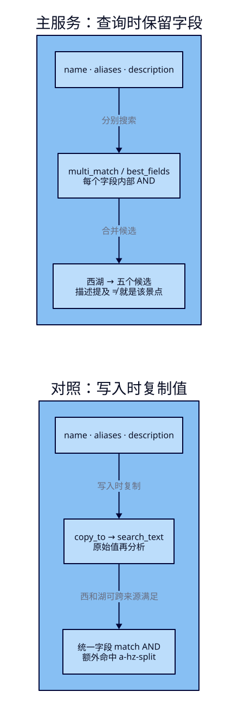
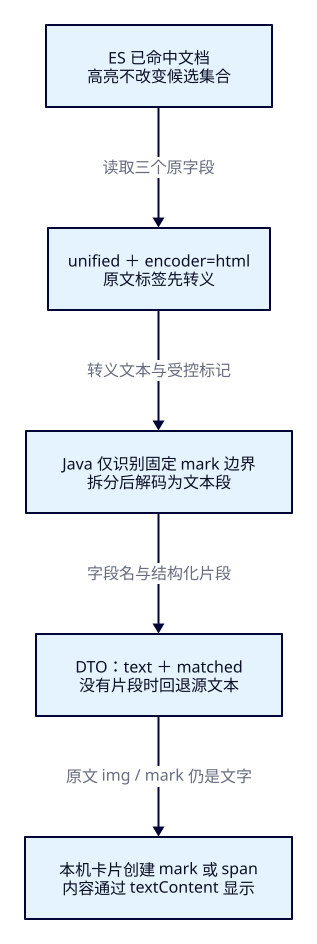

多字段与高亮：
搜到以后，还要看懂
F07 的本机展示壳已经能把条件送进 Java 和 ES，但只看名称会漏掉别名与描述；游客也不知道结果为什么出现。本课让三个字段分别承担召回职责，再把命中位置安全地带回卡片。这里仍是景点搜索学习，不把“描述提到西湖”当成“景点就是西湖”。
本课目标
- 用完整 ID 集合解释名称、别名、描述的召回差异，区分每字段 AND 与 copy_to 合并字段 AND。
- 在同一组城市、预算、开放和距离条件下，对照 REST、官方 Java Client 与 DTO；说明字段权重为什么不保证本课卡片顺序。
- 核对高亮字段、原文片段与缺值回退，让原文 HTML 只作为文字显示；解释亮色文字不能替代评分解释。
1. 游客记得“钱塘湖”，为什么搜不到西湖
游客可能用旧称，也可能记得介绍中的一句话。只查 name，不会自动去 aliases 或 description 找资料；Elasticsearch 不会因为它知道景点名称，就替你推断业务别名。运营需要明确维护别名，并决定描述中的提及是否也应该召回。ES 的职责是按指定字段、分析方式和查询规则找候选；Java 保持业务条件并投影结果；展示壳指出匹配位置，让游客判断是否合适。
扩大字段以后，湖畔茶园会因为“游览后可前往西湖”出现。它确实满足文本条件，却不是西湖本身。因此本课先解决“在哪些资料里找、怎样显示找到的位置”，不承诺实体识别或推荐质量。名称更重要的业务倾向可通过权重表达，但最终质量仍需后面的查询集和评分课验证。
2. 三个来源，不能失去各自的身份
沿用 F07 的十二份固定合成资料与整数分、CNY、open、坐标条件。只给杭州西湖补 aliases=[钱塘湖]，给湖畔茶园补 aliases=[茶香小院]，另外加入三份对照。原十二份已有字段与值保持原样，不把真实旅游资料或经营信息混进实验。
| 业务 ID / 名称 | 本课要看什么 |
|---|---|
| a-hz-xihu / 杭州西湖 | name 含西湖，aliases 含钱塘湖；免费0分 |
| a-hz-tea / 湖畔茶园 | description 为“游览后可前往西湖。”；8000分 |
| a-hz-boundary / 西湖预算线 | name 命中，价格恰好20000分 |
| a-hz-guide / 步行驿站 | description 提到西湖，另有故意加入的 img / mark 标签；1000分 |
| a-hz-split / 西岸步道 | name 有西，description“湖边休息区。”有湖；1000分 |
| a-hz-plain / 西湖步道 | name 命中，完全没有 aliases 和 description；1000分 |
新增三份都在 HZ、圆心30.25/120.15、CNY、open、1000分；完整十五份见固定资料。福州、超预算、下架、缺价、缺状态与缺坐标等原有反例继续被硬条件排除。实验不依赖旧索引存在。
name、aliases、description 都是 standard 分析的 text。aliases 是普通业务字段，数组里的每项是一个别名；它既不是同义词规则，也不是 ES 的 field alias 或 index alias。name.raw 则是同一名称的 keyword 多字段：把一个原值用另一种方式索引，和“同时搜索三个不同来源”是两件事。

3. f08-c01：独立建索引，再对照名称与多字段
在仓库根目录开始。沿用 F07 的 Spring Boot4.0.8 / JDK25 / 官方 Java与Rest5 Client9.4.8 / Maven Wrapper3.3.4与Maven3.9.11；实际应用 JDK 为 Temurin25.0.4.1+1，ES9.4.0容器使用自身 bundled JVM，两者不是同一个 Java 安装。先让 JAVA_HOME / PATH 指向你本机的 JDK25。不要把 historical travel-portal 工程作为前置。
cd projects/travel-search
docker compose -f infra/single-node/compose.yaml up -d es
bash infra/single-node/wait.sh
bash labs/f08/01-prepare.sh准备脚本有六条请求：版本、创建、索引健康、Bulk、refresh、count。应分别看到 ES9.4.0、acknowledged=true、green且不超时、十五项created且errors=false、零失败分片、count=15。Bulk 的HTTP200不能替代每项检查；已有索引时创建失败，应停止并先点名清理，不能跳过错误混用旧数据。
#!/usr/bin/env bash
set -euo pipefail
source "$(dirname "$0")/env.sh"
curl --fail-with-body -sS "$ES_URL/?pretty"
curl --fail-with-body -sS -X PUT "$ES_URL/tut-f08-attractions?pretty" \
-H 'Content-Type: application/json' --data-binary @search/f08/index.json
curl --fail-with-body -sS "$ES_URL/_cluster/health/tut-f08-attractions?wait_for_status=green&timeout=30s&pretty"
curl --fail-with-body -sS -X POST "$ES_URL/tut-f08-attractions/_bulk?pretty" \
-H 'Content-Type: application/x-ndjson' --data-binary @data/f08/attractions.ndjson
curl --fail-with-body -sS -X POST "$ES_URL/tut-f08-attractions/_refresh?pretty"
curl --fail-with-body -sS "$ES_URL/tut-f08-attractions/_count?pretty"展开完整 mapping：本课新增 aliases 与 search_text
一主分片、零副本、dynamic=strict，所有原字段保持前课类型。copy_to 的目标显式声明为 text；它在写入时接收 name/aliases/description 的原始值，再用目标分析器分析，不是复制原字段的 token。
{
"settings": {
"number_of_shards": 1,
"number_of_replicas": 0
},
"mappings": {
"dynamic": "strict",
"properties": {
"attraction_id": {
"type": "keyword"
},
"name": {
"type": "text",
"analyzer": "standard",
"fields": {
"raw": {
"type": "keyword"
}
},
"copy_to": [
"search_text"
]
},
"city_code": {
"type": "keyword"
},
"ticket_price_fen": {
"type": "integer",
"coerce": false
},
"currency": {
"type": "keyword"
},
"status": {
"type": "keyword"
},
"description": {
"type": "text",
"analyzer": "standard",
"copy_to": [
"search_text"
]
},
"published_on": {
"type": "date",
"format": "strict_date"
},
"location": {
"type": "geo_point"
},
"aliases": {
"type": "text",
"analyzer": "standard",
"copy_to": [
"search_text"
]
},
"search_text": {
"type": "text",
"analyzer": "standard"
}
}
}
}search_text 仅用于本课对照，不由 Java 接口或浏览器任意切换查询字段。新增 copy_to 不是给旧文档自动补全索引内容；本课直接用新索引和完整固定资料重导入。真实系统的迁移与重建放 F33。
4. 先把一个字段搜清楚，再让三个字段一起搜
standard 会把“西湖”分析成“西”“湖”。F07 用名称 OR，任何一个词项就可能命中，所以湖畔茶园也会出现。本课为了隔离“字段扩展”的效果，显式改用 AND；先比较 name-only AND，再比较多字段 AND，不把 OR→AND 的变化误称为多字段自然带来的结果。它仍不要求词序或原文完全相等，短语与精确值沿用 F05 的区别。
multi_match 把相同查询交给给定字段。这里 best_fields 对各字段生成查询后合并，operator=and 作用在每一个字段内部：至少一个字段本身具备全部词项，才满足本课文本条件。“西”在名称、“湖”在描述，不能在这个模式下拼起来过关。可跨字段满足词项的其他查询模式留作扩展，不与本请求混写。依据见官方 multi_match 说明。
name^3、aliases^2 是字段查询的相对权重，description默认1；best_fields 在本课 tie_breaker=0 下使用最佳字段的加权得分，而不是把三个字段的分数直接相加。权重不等于“名称命中永远排第一”：词频、长度等都会影响得分。这里继续按 attraction_id 升序，track_scores 只是保留观察分数，卡片次序根本不按分数排列；相关性质量留给 F18–F22。
{
"size": 20,
"track_total_hits": true,
"track_scores": true,
"_source": {
"includes": [
"attraction_id",
"name",
"city_code",
"ticket_price_fen",
"currency",
"status",
"location",
"aliases",
"description"
]
},
"query": {
"bool": {
"must": [
{
"multi_match": {
"query": "西湖",
"fields": [
"name^3",
"aliases^2",
"description"
],
"type": "best_fields",
"operator": "and",
"tie_breaker": 0.0
}
}
],
"filter": [
{
"term": {
"city_code": {
"value": "HZ"
}
}
},
{
"term": {
"currency": {
"value": "CNY"
}
}
},
{
"range": {
"ticket_price_fen": {
"gte": 0,
"lte": 20000
}
}
},
{
"term": {
"status": {
"value": "open"
}
}
},
{
"geo_distance": {
"distance": "3.0km",
"distance_type": "arc",
"location": {
"lat": 30.25,
"lon": 120.15
}
}
}
]
}
},
"sort": [
{
"attraction_id": {
"order": "asc"
}
}
],
"highlight": {
"type": "unified",
"encoder": "html",
"pre_tags": [
"<mark>"
],
"post_tags": [
"</mark>"
],
"require_field_match": true,
"fields": [
{
"name": {
"number_of_fragments": 0
}
},
{
"aliases": {
"number_of_fragments": 0
}
},
{
"description": {
"fragment_size": 120,
"number_of_fragments": 1
}
}
]
}
}query.bool 的五组 filter 完整保留：HZ、CNY、0≤价格≤20000分、明确open、同一圆心3km球面距离。增加文本来源不意味着放宽预算或放行下架资料。_source includes 只限制返回资料，不限制检索范围，也不会改变 highlight 的字段选择。
5. 真实结果：出现位置，比“找到了”更有用
在工程目录执行 bash labs/f08/02-fields.sh。它分别把三个完整JSON发给 POST /tut-f08-attractions/_search；读hits.total与每条_id，然后才看highlight。本轮真实ES两轮均得到下表；所有次序按ID，total.relation=eq，timed_out=false、失败分片0。用“西湖”时，name-only和multi仅改变文本查询，过滤条件完全相同。
| 查询文件 | 完整 ID 次序 | 判断证据 |
|---|---|---|
| name-only / 西湖 | a-hz-boundary → a-hz-plain → a-hz-xihu | 3条；各自名称含西与湖 |
| multi / 西湖 | a-hz-boundary → a-hz-guide → a-hz-plain → a-hz-tea → a-hz-xihu | 5条；guide/tea由描述召回 |
| alias / 钱塘湖 | a-hz-xihu | 1条；aliases亮钱/塘/湖，名称原文不变 |
杭州西湖仍是0分免费，预算线20000分，驿站与步道1000分，茶园8000分。别名命中不是把卡片改名为钱塘湖：id/name仍来自同一文档的_source，aliases片段单独展示，保留游客核对实体的依据。
本轮主查询中，茶园与驿站的亮色片段在description；茶园的名称虽然含“湖”，没有满足本课名称AND，实际响应没有给它名称片段。杭州西湖和西湖步道则有名称片段。不能把这种具体结果推广为“高亮必然指出决定_score的最佳字段”。高亮器处理显示片段，复杂布尔查询也可能提取出不能独立证明整条查询成立的词项；打分解释需要后面的_explain。
6. f08-c02：copy_to 改变的是检索字段边界
另一个办法是在写入时把三个来源复制到search_text，然后只查这个字段。字段少不自动等于更快，也不保证与multi_match排名相同：长度、词项分布与字段权重的表达已经变了。本课只比较可核对的命中集合，不做性能结论。原值被复制不代表_source新增了search_text；官方 copy_to 说明明确区分了复制值与源文档。
{
"size": 20,
"track_total_hits": true,
"track_scores": true,
"_source": {
"includes": [
"attraction_id",
"name",
"city_code",
"ticket_price_fen",
"currency",
"status",
"location",
"aliases",
"description"
]
},
"query": {
"bool": {
"must": [
{
"match": {
"search_text": {
"query": "西湖",
"operator": "and"
}
}
}
],
"filter": [
{
"term": {
"city_code": {
"value": "HZ"
}
}
},
{
"term": {
"currency": {
"value": "CNY"
}
}
},
{
"range": {
"ticket_price_fen": {
"gte": 0,
"lte": 20000
}
}
},
{
"term": {
"status": {
"value": "open"
}
}
},
{
"geo_distance": {
"distance": "3.0km",
"distance_type": "arc",
"location": {
"lat": 30.25,
"lon": 120.15
}
}
}
]
}
},
"sort": [
{
"attraction_id": {
"order": "asc"
}
}
],
"highlight": {
"type": "unified",
"encoder": "html",
"pre_tags": [
"<mark>"
],
"post_tags": [
"</mark>"
],
"require_field_match": true,
"fields": [
{
"name": {
"number_of_fragments": 0
}
},
{
"aliases": {
"number_of_fragments": 0
}
},
{
"description": {
"fragment_size": 120,
"number_of_fragments": 1
}
}
]
}
}运行 bash labs/f08/03-copy.sh，按copy、no-highlight、empty观察三条请求。copy返回六条，次序为boundary → guide → plain → split → tea → xihu（完整前缀均为a-hz-）。额外的split来自名称“西岸步道”和描述“湖边休息区。”；统一字段里已有西和湖，AND成立，但并没有哪个原字段同时包含这两个字。它不是短语“西湖”在原文中的出现，也不是业务上的西湖景点。
copy仍请求原字段高亮，但require_field_match=true，主查询只针对search_text，本轮六条hits都没有highlight。search_text也不在_source里，不能想当然取它来做卡片描述。本课主服务因此选择multi_match原字段路径；对照不改成require_field_match=false来掩盖差异。若需要另外定义展示词项或highlight_query，必须单独说明它与主查询的关系，不能把展示逻辑冒充召回证据。
no-highlight使用与主查询相同的query但去掉整个highlight配置，仍是五条原ID、相同分数；empty用“火星”，正常200、total=0。两者分别证明“没有片段”不等于“没有命中”，“没有命中”不等于连接失败。多字段召回、打分和显示片段应分别检查。
7. 高亮是附加的显示资料，要有回退
主请求显式选择unified、encoder=html、固定<mark>标签和require_field_match=true。name/aliases设number_of_fragments=0，返回整字段的高亮值；description只取一个目标长度120的片段，实际边界由高亮器决定，不是硬截断120字符。数组别名可产生多段，不把返回的第一项擅自当成全部别名。长文本的分析限制与成本仍需按实际资料评估，本课短样本不证明大字段成本。
highlight在命中对象旁边返回，并不覆盖_source。没有片段时，Java对name回退原名称，对aliases回退原数组拼接、缺失显示“未提供别名”，对description回退原描述、缺失显示“暂无描述”；回退都标为highlighted=false且matched=false。西湖步道虽缺描述，仍是有效命中；不能把缺描述补成“西湖”制造匹配位置。本课未设置no_match_size，回退策略由应用明确承担。设置语义见官方高亮设置。

8. Java：请求与DTO都能逐项核对
继续使用F07的单例官方Client、输入校验和错误处理，新增MultiFieldSearchService；原F07接口和展示壳保留作课次基线。新接口是 POST /api/attractions/multi-search，不是通用DSL代理；ES端点与索引仍只由服务端配置。请求构造如下，包含完整过滤、投影与高亮，没有在浏览器补筛选。
public SearchRequest request(SearchInput input) {
return SearchRequest.of(search -> search.index(index)
.size(20).trackTotalHits(t -> t.enabled(true)).trackScores(true)
.source(s -> s.filter(f -> f.includes(List.of("attraction_id", "name", "city_code",
"ticket_price_fen", "currency", "status", "location", "aliases", "description"))))
.query(q -> q.bool(b -> b
.must(m -> m.multiMatch(t -> t.query(input.q())
.fields("name^3", "aliases^2", "description")
.type(TextQueryType.BestFields).operator(Operator.And).tieBreaker(0.0)))
.filter(f -> f.term(t -> t.field("city_code").value(input.cityCode())))
.filter(f -> f.term(t -> t.field("currency").value("CNY")))
.filter(f -> f.range(r -> r.number(n -> n.field("ticket_price_fen")
.gte(0.0).lte(input.maxPriceFen().doubleValue()))))
.filter(f -> f.term(t -> t.field("status").value("open")))
.filter(f -> f.geoDistance(g -> g.field("location")
.distance(input.radiusKm() + "km").distanceType(GeoDistanceType.Arc)
.location(l -> l.latlon(p -> p.lat(input.latitude()).lon(input.longitude())))))))
.highlight(h -> h.type(HighlighterType.Unified).encoder(HighlighterEncoder.Html)
.preTags("<mark>").postTags("</mark>").requireFieldMatch(true)
.fields(NamedValue.of("name", HighlightField.of(f -> f.numberOfFragments(0))))
.fields(NamedValue.of("aliases", HighlightField.of(f -> f.numberOfFragments(0))))
.fields(NamedValue.of("description", HighlightField.of(f -> f.fragmentSize(120).numberOfFragments(1)))))
.sort(s -> s.field(f -> f.field("attraction_id").order(SortOrder.Asc))));
}
先拒绝超时、失败分片和缺关键源字段，再读取hit.highlight；高亮表用原字段名取值。返回的esRequest仍来自本次SearchRequest真实序列化。以下是完整投影与回退，价格不把null转成0，总数relation原样保留。
public MultiFieldResult search(SearchInput input) throws IOException {
var request = request(input);
var response = client.search(request, MultiFieldAttraction.class);
if (response.timedOut() || response.shards().failed().longValue() != 0
|| response.hits().total() == null) {
throw new AttractionSearchService.IncompleteSearchException();
}
var items = response.hits().hits().stream().map(hit -> {
var source = hit.source();
if (source == null || !hit.id().equals(source.attractionId())
|| source.name() == null || source.ticketPriceFen() == null) {
throw new AttractionSearchService.IncompleteSearchException();
}
var highlights = hit.highlight();
var snippets = List.of(
HighlightSegments.snippet("name", highlights.get("name"), source.name()),
HighlightSegments.snippet("aliases", highlights.get("aliases"),
source.aliases() == null || source.aliases().isEmpty() ? "未提供别名" : String.join("、", source.aliases())),
HighlightSegments.snippet("description", highlights.get("description"),
source.description() == null || source.description().isBlank() ? "暂无描述" : source.description()));
return new MultiFieldResult.Card(hit.id(), source.name(), source.cityCode(),
source.ticketPriceFen(), source.currency(), source.status(), hit.score(), snippets);
}).toList();
String dsl = JsonpUtils.toJsonString(request, client._jsonpMapper());
return new MultiFieldResult(response.hits().total().value(), response.hits().total().relation().jsonValue(),
response.took(), input, json.readTree(dsl), items);
}
package dev.esweb.travel;
import java.util.List;
import tools.jackson.databind.JsonNode;
public record MultiFieldResult(long total, String totalRelation, long esTookMs,
SearchInput conditions, JsonNode esRequest, List<Card> items) {
public record Segment(String text, boolean matched) {
}
public record Snippet(String field, boolean highlighted, List<Segment> segments) {
}
public record Card(String id, String name, String cityCode, Integer ticketPriceFen,
String currency, String status, Double score, List<Snippet> snippets) {
}
}encoder=html先转义原文中的标签字符，只有我们指定的<mark>边界保持结构。Java先识别这些固定边界，再对每段文字做一次HTML实体解码；不能先解码整串，否则原文的<mark>也可能被当成高亮边界。解析器遇到未闭合标记或其他未转义括号拒绝结果，复用SEARCH_INCOMPLETE分支。它只服务于本课固定高亮协议，不是任意HTML清洗器。
package dev.esweb.travel;
import java.util.ArrayList;
import java.util.List;
import org.springframework.web.util.HtmlUtils;
/** Only literal server-controlled mark delimiters are structural; decode text after splitting. */
public final class HighlightSegments {
private HighlightSegments() {
}
public static List<MultiFieldResult.Segment> parse(String encoded) {
var parts = new ArrayList<MultiFieldResult.Segment>();
int cursor = 0;
boolean matched = false;
while (cursor < encoded.length()) {
String delimiter = matched ? "</mark>" : "<mark>";
int next = encoded.indexOf(delimiter, cursor);
int end = next < 0 ? encoded.length() : next;
String text = encoded.substring(cursor, end);
// encoder=html escapes original markup. Any other literal bracket is outside our contract.
if (text.contains("<") || text.contains(">") || (matched && next < 0)) {
throw new AttractionSearchService.IncompleteSearchException();
}
if (!text.isEmpty()) parts.add(new MultiFieldResult.Segment(HtmlUtils.htmlUnescape(text), matched));
if (next < 0) break;
matched = !matched;
cursor = next + delimiter.length();
}
if (matched) throw new AttractionSearchService.IncompleteSearchException();
return List.copyOf(parts);
}
public static MultiFieldResult.Snippet snippet(String field, List<String> fragments, String fallback) {
if (fragments == null || fragments.isEmpty()) {
return new MultiFieldResult.Snippet(field, false,
List.of(new MultiFieldResult.Segment(fallback, false)));
}
var segments = new ArrayList<MultiFieldResult.Segment>();
for (String fragment : fragments) {
if (!segments.isEmpty()) segments.add(new MultiFieldResult.Segment(" … ", false));
segments.addAll(parse(fragment));
}
return new MultiFieldResult.Snippet(field, true, List.copyOf(segments));
}
}DTO的segments只含text和matched。课程提供的展示壳为matched段创建mark元素，其余创建span，再通过textContent放入内容；没有把ES片段或_source送进innerHTML。这样“<img …>”和原文“<mark>原文标签</mark>”都只显示为文字。即使文本里出现看似HTML的内容，也不能重新解释为节点；只靠encoder=html后直接拼HTML，会让协议和安全边界难以核对。
9. f08-c03：在同一个窗口看输入、片段与真实DSL
在另一终端构建并启动更新后的同一工程。若F07应用还在运行，先在其终端Ctrl+C正常关闭，再启动新包；不同时占用18080。
cd projects/travel-search/backend
./mvnw -version
./mvnw -B -ntp clean package
java -jar target/travel-search-0.7.0.jar打开 http://127.0.0.1:18080/f08.html。输入“西湖”搜索，核对五个ID、每张卡的名称/别名/描述、元价格和亮色位置，再把关键词改“钱塘湖”与“火星”。前后应是5→1→0；每次展开观察区，核对提交给Java的条件、序列化DSL和接口响应。页面预算200元仍提交20000分，没有更改过滤契约。根路径仍保留F07观察页。
#!/usr/bin/env bash
set -euo pipefail
source "$(dirname "$0")/env.sh"
for query in multi alias empty; do
curl --fail-with-body -sS -X POST "$APP_URL/api/attractions/multi-search" \
-H 'Content-Type: application/json' --data-binary "@search/f08/input-$query.json"
done浏览器真实调用路径仍是浏览器→本机Java→ES。Pages只承载这篇教程；不要向Pages的/api发请求，也不让浏览器直接访问19200或携带ES凭据。卡片中的guide应把原文img和mark标签显示成文字，不能加载图片或执行事件；plain应显示“未提供别名 / 暂无描述”。点击别名查询后，卡片标题仍为“杭州西湖”，亮色位置在别名。
错误分支沿用F07：非法输入400，ES连接不可用503，索引缺失等502，正常空集200。本课实测非法预算与缺索引，不重复声称已造分片部分失败或ES执行超时。展示壳每次搜索先清空旧卡片，失败显示故障；它的10秒等待截止不等于ES执行超时配置。
10. 点名清理，重做同一课
关闭应用后在工程目录执行：
#!/usr/bin/env bash
set -euo pipefail
source "$(dirname "$0")/env.sh"
# 只删除本课15份教学资料；不删其他索引、容器或持久卷。
curl --fail-with-body -sS -X DELETE "$ES_URL/tut-f08-attractions?pretty"它只删除tut-f08-attractions，不删F07索引、容器或持久卷。再按01-prepare→启动Java→02-fields→03-copy→04-java→本机f08.html顺序重做，第一轮和清理后的第二轮均应是十五项created、相同ID集合与回退结果。只重复Bulk会出现updated，不能冒充清理重做。作者两轮原始响应见真实验收记录，不要求读者掌握验收工具。
本课头部15条教学HTTP请求=准备6＋字段3＋copy/回退/空集3＋Java3；清理1、启动探活、作者额外mapping/故障检查、浏览器重复调用另计，图解和构建不计作请求。三案例各自回答召回、字段边界与安全展示问题。
能力检查：先预测，再解释
1. 为什么“钱塘湖”命中后，卡片仍应叫杭州西湖？
aliases只是运营维护的检索来源；命中的业务ID仍为a-hz-xihu，名称取_source.name。显示别名片段说明输入在哪里出现，不能把检索词覆盖正式名称，也不需要同义词插件。
2. 西在名称、湖在描述，best_fields AND为什么不命中？
本模式的AND在每字段内部应用；split的两个原字段都缺一个词项。改查copy_to后的search_text时两个值进入同一字段，所以命中，但不代表原文有短语“西湖”。
3. 名称权重3，为什么不保证名称匹配的卡片在前？
分数还受词项、字段长度等影响，而且本课sort明确按attraction_id升序。权重参与文本评分，不能覆盖显式排序；最佳字段得分也不是三个字段简单求和。
4. 卡片没有亮色，是不是这条资料没参与查询？
不能这样判断。copy只查询search_text且require_field_match=true，本轮六个命中原字段都无高亮；no-highlight仍返回五条。先读hits和query，再判断片段与回退，高亮不能当评分解释。
5. 把整个高亮串先HTML解码再切mark，有什么问题？
原文的转义mark也会变成真实边界，混淆内容和协议。应先识别固定未转义标记，再按段解码；浏览器只用文本方式放入段内容，原文img不能成为图片。
6. 独立把预算改80元，应怎样核对？
保持multi_match和所有其他条件，把maxPriceFen与range上限改8000。预算线被排除，guide→plain→tea→xihu四个ID保留，价格1000/1000/8000/0分；REST、Java、卡片一起核对。此项是迁移练习，另有作者实测，不算头部主流程请求。
实际陷阱
扩大召回会带来新的候选。保留字段标签和正式名称，不能用高亮假装已做实体消歧或相关性评估。
复制值进入另一个检索字段，AND范围与打分条件随之改变。它不会自动给旧文档补内容，也不能直接读取不存在于_source的合并字段作为描述。
转义、固定边界解析与文本节点显示必须保持同一协议；原文字段、缺片段回退和JSON观察区也要按文本显示。
速记与下一课
| 问题 | 本课判断 |
|---|---|
| 不同来源怎样一起搜 | multi_match保留字段，best_fields的AND作用于各字段 |
| 写入时合并有什么代价 | copy_to值后重新分析，AND可跨来源；_source不新增目标值 |
| 为什么某卡片有亮色 | 查看highlight的原字段与片段，不能据此断定最佳得分字段 |
| 没片段如何展示 | 回退_source文本，缺别名/描述用明确占位；不造匹配 |
| 怎样安全地返回 | encoder=html→先拆固定边界再解码→text/matched→文本节点 |
先核对召回集合，再解释显示位置；两个证据都不代替排序质量。
现在游客能找到别名与描述中的景点，也能辨认出现位置。但“杭州有多少免费候选、预算区间各有多少”仍不能从当前最多20张卡片准确得出。F09会学习聚合与统计范围，本课不提前实现筛选计数。
固定版本依据与实际验收边界
ES9.4.0 / Lucene10.4.0，实测与固定源码核对分别记录；MultiMatchQueryParser.buildFieldQueries / combineGrouped对照每字段构造与dis_max；HighlightUtils对照字段值读取与HTML编码器。官方在线文档可能随版本更新，本课结论以固定请求和9.4.0响应共同核对。
写作与内容审阅请求xhigh，当前根入口无法设置或确认实际强度，作者自审，无独立代理。构建、ES/Java、展示壳、D2生成与HTTP阅读分别见验收文件；没有验证大字段成本、排名质量、TLS/权限、插件、多节点或数据库/CDC。